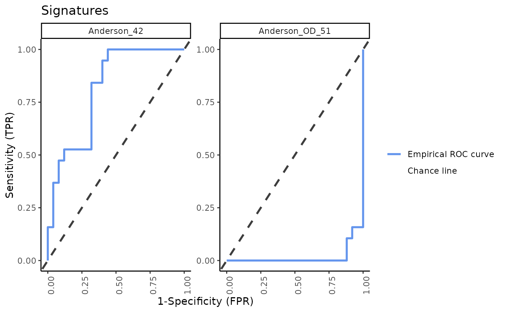

Create an array of ROC plots to compare signatures.
signatureROCplot( inputData, annotationData, signatureColNames, annotationColName, scale = FALSE, choose_colors = c("cornflowerblue", "gray24"), name = "Signatures", nrow = NULL, ncol = NULL )
| inputData | an input data object. It should either be of the class
|
|---|---|
| annotationData | a |
| signatureColNames | a |
| annotationColName | a character string naming the column name in the
|
| scale | logical. Setting |
| choose_colors | a |
| name | a character string giving the title of the boxplot. The default
is |
| nrow | integer giving the number of rows in the resulting array. |
| ncol | integer giving the number of columns in the resulting array. |
An array of ROC plots.
# Run signature profiling choose_sigs <- subset(TBsignatures, !(names(TBsignatures) %in% c("Lee_4", "Roe_OD_4")))[c(1,2)] prof_indian <- runTBsigProfiler(TB_indian, useAssay = "logcounts", algorithm = "ssGSEA", signatures = choose_sigs, parallel.sz = 1)#>#>#> Warning: 1 genes with constant expression values throuhgout the samples.#> Estimating ssGSEA scores for 2 gene sets. #> | | | 0% | |== | 2% | |=== | 5% | |===== | 7% | |====== | 9% | |======== | 11% | |========== | 14% | |=========== | 16% | |============= | 18% | |============== | 20% | |================ | 23% | |================== | 25% | |=================== | 27% | |===================== | 30% | |====================== | 32% | |======================== | 34% | |========================= | 36% | |=========================== | 39% | |============================= | 41% | |============================== | 43% | |================================ | 45% | |================================= | 48% | |=================================== | 50% | |===================================== | 52% | |====================================== | 55% | |======================================== | 57% | |========================================= | 59% | |=========================================== | 61% | |============================================= | 64% | |============================================== | 66% | |================================================ | 68% | |================================================= | 70% | |=================================================== | 73% | |==================================================== | 75% | |====================================================== | 77% | |======================================================== | 80% | |========================================================= | 82% | |=========================================================== | 84% | |============================================================ | 86% | |============================================================== | 89% | |================================================================ | 91% | |================================================================= | 93% | |=================================================================== | 95% | |==================================================================== | 98% | |======================================================================| 100% #># Create ROC plots signatureROCplot(prof_indian, signatureColNames = names(choose_sigs), annotationColName = "label")